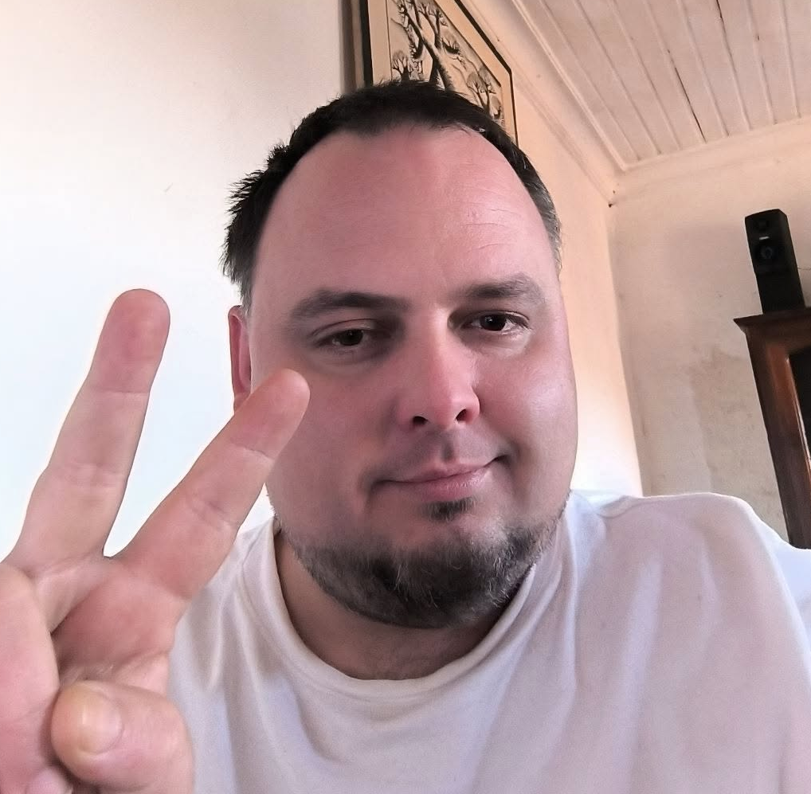

Desktop & MAUI
Desktopové a multiplatformní aplikace. Uživatelské rozhraní i aplikační logika v ekosystému .NET.
Tomáš Fiala / Developer
Jsem Tomáš Fiala. Zaměřuji se na C# a .NET, desktopové a multiplatformní aplikace s MAUI. Věnuji se také API a tvorbě webů — se zázemím dlouholeté práce se softwarem i hardwarem.
01 / Zaměření & technologie
Vývoj napříč vrstvami aplikace — od toho, co vidí uživatel, po to, co běží na pozadí.
Desktopové a multiplatformní aplikace. Uživatelské rozhraní i aplikační logika v ekosystému .NET.
Serverová část aplikací a API. Místo, kde se propojují data, logika a jednotlivé části systému.
Webové prezentace s přehledným obsahem a funkcemi podle potřeb konkrétního projektu.
02 / Aplikace & open source
Podrobný přehled projektů se načítá pomocí JavaScriptu. O vývoji systému pro logopedické ambulance si můžete přečíst také v sekci O mně.
03 / Webové realizace
Weby, které jsem vytvořil. Od prezentace finančních služeb po web taxislužby.
Podrobnosti realizací se načítají pomocí JavaScriptu. Pokud se nezobrazí, zkuste stránku načíst znovu.
04 / O mně
Vývojář aplikací / C# & .NET

Počítačům se věnuji dlouhá léta. Od správy softwaru a operačních systémů po hardware a řešení problémů v provozu. Dnes je mým hlavním zaměřením vývoj aplikací.
Zkušenosti se správou SW i HW mi dávají širší pohled na prostředí, ve kterém aplikace skutečně fungují. Při vývoji tak přemýšlím nejen o samotném kódu, ale i o nasazení a každodenním používání.
Jedním z mých prvních projektů bylo komplexní databázové řešení ve Visual Basicu 6.0 pro logopedické ambulance. Šlo o aplikaci pro síťový provoz, která zahrnovala agendu ambulancí, vykazování zdravotním pojišťovnám, statistiky a pokročilé kontroly dat. Tento software jsem později prodal.
Dnes vyvíjím v C# a .NET, věnuji se desktopovým a multiplatformním aplikacím s MAUI, API i webovým stránkám. Ne všechna moje práce je veřejná — zde představuji vybrané projekty a realizace, které mohu sdílet.
Profil na GitHubu05 / Kontakt
Napište mi na e-mail. Na GitHubu mě najdete pod přezdívkou VildaFusek.